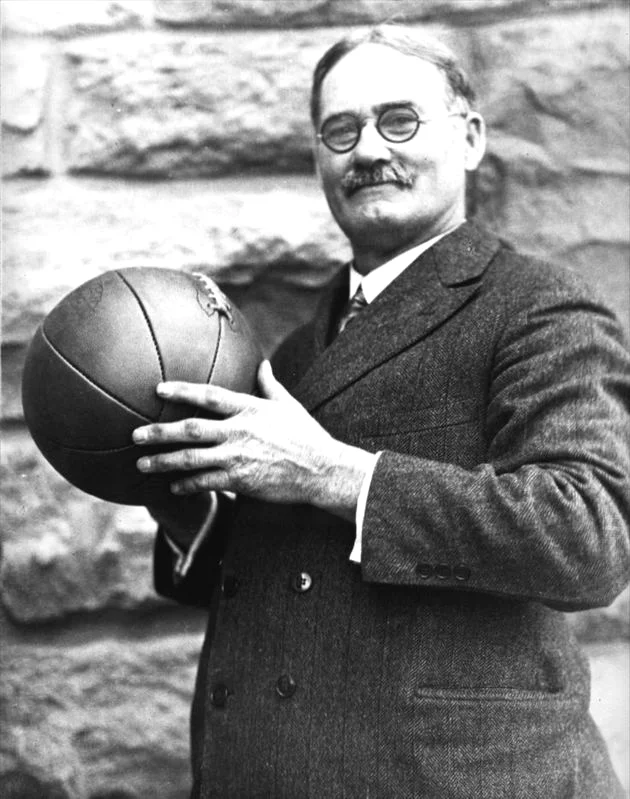

Origem e História
O basquetebol foi criado em 1891 pelo professor de Educação Física canadense James Naismith (1861-1940).
Na época, ele trabalhava na Associação Cristã de Moços de Springfield, Massachusetts, nos Estados Unidos.

O esporte surgiu como uma alternativa ao inverno rigoroso da região, em detrimento dos outros praticados ao ar livre como o basebol e o futebol.
Além disso, a ideia original era criar um esporte menos violento que o futebol
americano. Aliado a isso, o professor criador pretendia integrar os alunos nas aulas de
educação física e estimular a coletividade dos grupos.
O primeiro jogo oficial de basquete foi disputado em 1892, e teve uma plateia
aproximada de 200 pessoas. Nesse mesmo ano, as mulheres começaram a praticar essa modalidade.
Já a primeira partida feminina ocorreu em 1896.
A modalidade feminina foi inserida pela professora de educação física Senda Berenson (1868-1954).
Foi também em 1896 que o esporte chegou ao Brasil, trazido pelo norte-americano Augusto Louis.
Curioso notar que no início o esporte era praticado com uma bola semelhante à de futebol.
Somente em 1984 que a bola de basquete, tal qual conhecemos hoje, foi desenvolvida por uma empresa de Massachusetts.
Somente mais tarde que o basquetebol passou a figurar nas Olimpíadas.
O primeiro jogo de basquete olímpico aconteceu nos Jogos Olímpicos de Verão de 1936, em Berlim.
Esse momento representou uma grande conquista para a disseminação do esporte pelo mundo.
Hoje, cerca de 200 países são filiados à FIBA, Federação Internacional de Basquetebol.
Essa organização foi fundada em 1932 e é responsável por organizar os eventos relacionados com o basquete em nível mundial.
Atualmente, sua sede está localizada em Genebra, na Suíça.